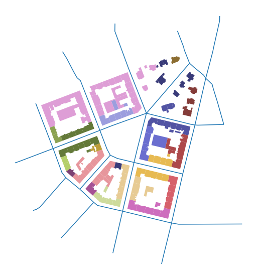
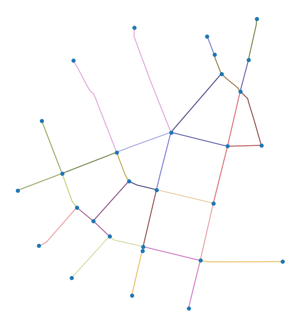
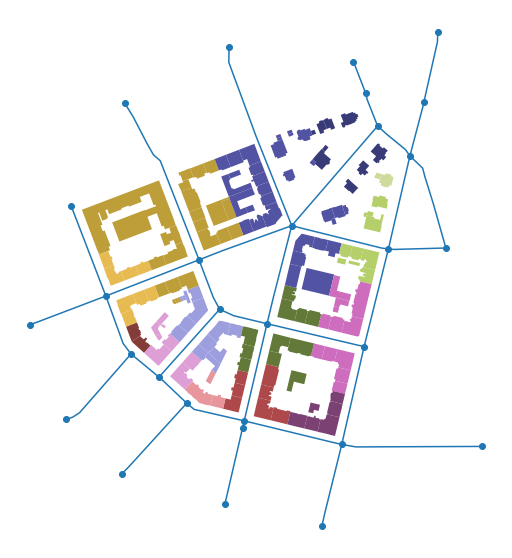

Note
As explained in the Data Structure chapter, momepy relies on links between different morphological elements. Each element needs ID, and each of the small-scale elements also needs to know the ID of the relevant higher-scale element. The case of block ID is explained in the previous chapter, momepy.Blocks generates it together with blocks gdf.
momepy
momepy.Blocks
This notebook will explore how to link street network, both nodes and edges, to buildings and tessellation.
For linking street network edges to buildings (or tessellation or other elements), momepy offers momepy.get_network_id. It simply returns a Series of network IDs for analysed gdf.
momepy.get_network_id
Series
[1]:
import momepy import geopandas as gpd import matplotlib.pyplot as plt
For illustration, we can use bubenec dataset embedded in momepy.
bubenec
[2]:
path = momepy.datasets.get_path('bubenec') buildings = gpd.read_file(path, layer='buildings') streets = gpd.read_file(path, layer='streets') tessellation = gpd.read_file(path, layer='tessellation')
First, we have to be sure that streets segments have their unique IDs.
[3]:
streets['nID'] = momepy.unique_id(streets)
Then we can link it to buildings. The only argument we might want to look at is min_size, which should be a value such that if you build a box centred in each building centroid with edges of size 2 * min_size, you know a priori that at least one segment is intersected with the box. You can see it as a sort of tolerance.
min_size
2 * min_size
[4]:
buildings['nID'] = momepy.get_network_id(buildings, streets, 'nID', min_size=100)
Snapping: 100%|██████████| 144/144 [00:00<00:00, 2477.79it/s]
Generating centroids... Generating rtree...
[5]:
f, ax = plt.subplots(figsize=(10, 10)) buildings.plot(ax=ax, column='nID', categorical=True, cmap='tab20b') streets.plot(ax=ax) ax.set_axis_off() plt.show()

Note: colormap does not have enough colours, that is why everything on the top-left looks the same. It is not.
The situation with nodes is slightly more complicated as you usually don’t have or even need nodes. However, momepy includes some functions which are calculated on nodes (mostly in graph module). For that reason, we will pretend that we follow the usual workflow:
graph
Street network GeoDataFrame (edges only)
GeoDataFrame
networkx Graph
Graph
Street network - edges and nodes as separate GeoDataFrames.
GeoDataFrames
[6]:
graph = momepy.gdf_to_nx(streets)
Some graph-based analysis happens here.
[7]:
nodes, edges = momepy.nx_to_gdf(graph)
[8]:
f, ax = plt.subplots(figsize=(10, 10)) edges.plot(ax=ax, column='nID', categorical=True, cmap='tab20b') nodes.plot(ax=ax, zorder=2) ax.set_axis_off() plt.show()

For attaching node ID to buildings, we will need both, nodes and edges. We have already determined which edge building belongs to, so now we only have to find out which end of the edge is the closer one. Nodes come from momepy.nx_to_gdf automatically with node ID:
momepy.nx_to_gdf
[9]:
nodes.head()
The same ID is now inlcuded in edges as well, denoting each end of edge. (Length of the edge is also present as it was necessary to keep as an attribute for the graph.)
[10]:
edges.head()
[11]:
buildings['nodeID'] = momepy.get_node_id(buildings, nodes, edges, 'nodeID', 'nID')
100%|██████████| 144/144 [00:00<00:00, 1740.07it/s]
[12]:
f, ax = plt.subplots(figsize=(10, 10)) buildings.plot(ax=ax, column='nodeID', categorical=True, cmap='tab20b') nodes.plot(ax=ax, zorder=2) edges.plot(ax=ax, zorder=1) ax.set_axis_off() plt.show()

All IDs are now stored in buildings gdf. We can copy them to tessellation using merge. First, we select columns we are interested in, then we merge them with tessellation based on the shared unique ID. Usually, we will have more columns than we have now.
merge
[13]:
buildings.columns
Index(['uID', 'geometry', 'nID', 'nodeID'], dtype='object')
[14]:
columns = ['uID', 'nID', 'nodeID'] tessellation = tessellation.merge(buildings[columns], on='uID') tessellation.head()
Now we should be able to link all elements together as needed for all types of morphometric analysis in momepy.